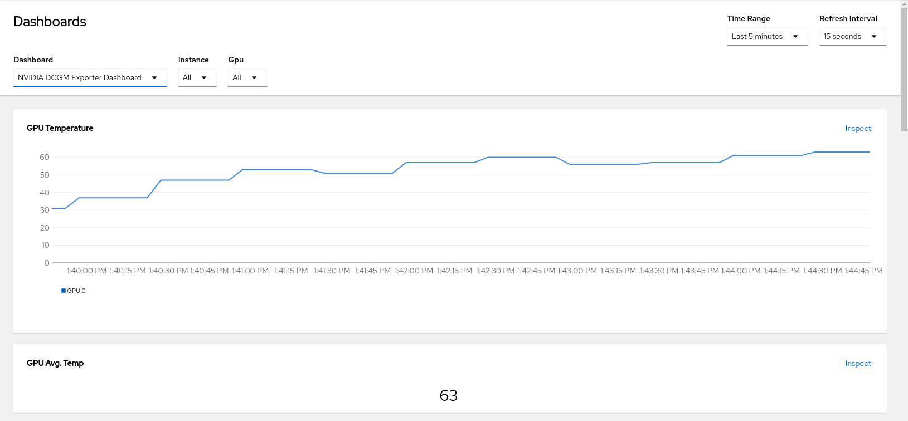

Enabling the GPU Monitoring Dashboard#
The GPU Operator exposes GPU telemetry for Prometheus by using the NVIDIA DCGM Exporter. These metrics can be visualized using a monitoring dashboard based on Grafana.
Perform the following procedure to add the dashboard to the Observe section of the OpenShift Container Platform web console.
Prerequisites#
Your cluster uses OpenShift Container Platform 4.10 or higher.
You have access to the cluster as a user with the
cluster-admincluster role.
Configuring the NVIDIA DCGM Exporter Dashboard#
Download the latest NVIDIA DCGM Exporter Dashboard from the DCGM Exporter repository on GitHub:
$ curl -LfO https://github.com/NVIDIA/dcgm-exporter/raw/main/grafana/dcgm-exporter-dashboard.jsonCreate a config map from the downloaded file in the
openshift-config-managednamespace:$ oc create configmap nvidia-dcgm-exporter-dashboard -n openshift-config-managed --from-file=dcgm-exporter-dashboard.json
Label the config map to expose the dashboard in the Administrator perspective of the web console:
$ oc label configmap nvidia-dcgm-exporter-dashboard -n openshift-config-managed "console.openshift.io/dashboard=true"
Optional: Label the config map to expose the dashboard in the Developer perspecitive of the web console:
$ oc label configmap nvidia-dcgm-exporter-dashboard -n openshift-config-managed "console.openshift.io/odc-dashboard=true"
View the created resource and verify the labels:
$ oc -n openshift-config-managed get cm nvidia-dcgm-exporter-dashboard --show-labels
Viewing GPU Metrics#
In the OpenShift Container Platform web console from the side menu, switch to the Administrator perspective, then navigate to Observe > Dashboards and select NVIDIA DCGM Exporter Dashboard from the Dashboard list.
If the dashboard was added to the Developer perspective, in the OpenShift Container Platform web console from the side menu, switch to the Developer perspective, navigate to Observe > Dashboard and select NVIDIA DCGM Exporter Dashboard from the Dashboard list.
The NVIDIA DCGM Exporter Dashboard displays the GPU-related graphs.

The provided Grafana dashboard includes a default set of DCGM metrics. You can create and deploy a custom dashboard definition in Grafana 6.x format.
Default NVIDIA DCGM Exporter Graphs#
The following table provides a brief description of the graphs on the default dashboard.
Graph |
Description |
|---|---|
GPU Temperature |
GPU temperature in Celsius. |
GPU Avg. Temp |
Average GPU temperature in Celsius. |
GPU Power Usage |
Power usage in watts for each GPU. |
GPU Power Total |
Total power usage in watts. |
GPU SM Clocks |
SM clock frequency in hertz. |
GPU Utilization |
GPU utilization, percent. |
GPU Framebuffer Mem Used |
Frame buffer memory used in MB. |
Tensor Core Utilization |
Ratio of cycles the tensor (HMMA) pipe is active, percent. |